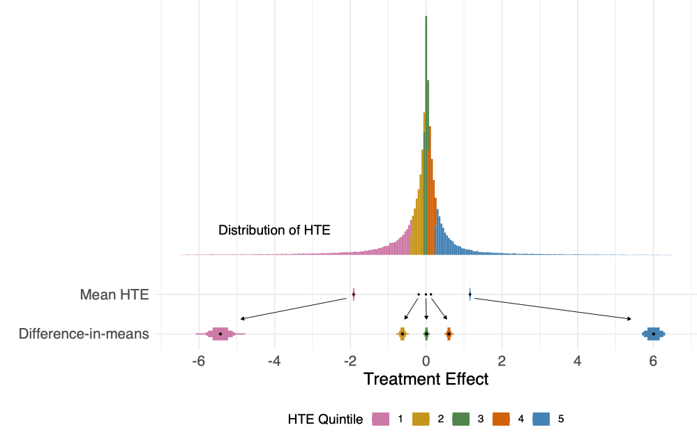
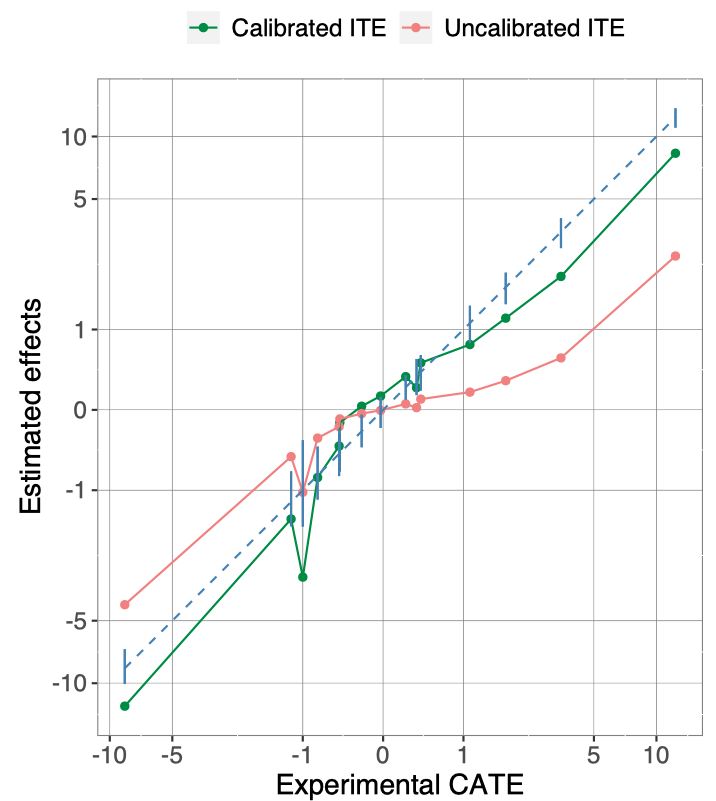

In an earlier post, I promised that rather than writing threads about papers, I’d talk about them here. That’s what this post is!
I’ve just had a paper (with Yan Leng) accepted to Information Systems Research titled “Calibration of Heterogeneous Treatment Effects in Randomized Experiments”. The entire motivation of the paper can be summed up in the following chart, showing that the HTEs are not alright:

The data undergirding this chart came from a big (and important) experiment at Facebook which was run around 2019 or so. It is sufficiently sensitive that I (still) can’t talk about what the actual intervention was, but one of the big questions was about how much heterogeneity there was in the intervention. It would have been a big deal if a small fraction of people exhibited very large effects, so we needed to look into whether this was the case. We did this by applying some of the rapidly developing literature on ML estimation of heterogeneous effects.
We threw machine learning at the problem using a bunch of covariates we collected about users’ behavior. We started with the simplest possible model, the venerable T-learner1. When I was at Facebook, I did a bunch of interviews in which I asked candidates to walk me through their model-building and model-testing process (starting with very simple gut-checks). One of the open-ended questions I would always ask was “how would you know if this particular model was good enough (e.g. to launch to production)?” With ML, you can often give pretty sensible answers to this question depending on what you’re trying to do and thinking carefully about what errors mean2. We found this a surprisingly hard question to answer in the causal setting.
How can we have a sense as to whether our HTEs are reasonable? In a standard machine learning setting, you have true labels which you can compare to your estimates to see how well you do at prediction. Even in the case of non-standard prediction models where you only learn about the truth long after you predict, you can use the truth to get a sense of how well you do. A great example of this was when FiveThirtyEight evaluated all of their predictive models they’d ever done. Of course, as you learn in the first lecture of any causal inference class, you never actually observe the true treatment effect: you only have exactly one of the treatment and control potential outcome for a unit.
The standard answer in the causal setting is that while you cannot observe individual effects, you can observe average effects. To bring things back to the motivating graph at the top, we started with the very simple exercise of splitting up our data based on quintiles of the estimated HTEs (from the T-learner) and comparing the average model-based estimates against the standard difference-in-means estimates in each quintile.
The results were pretty startling, as the ML-based HTEs were radically smaller in magnitude than the known unbiased estimates from a difference-in-means. In short, this plot instantly alerted us to the fact that something was going very wrong. As you can see in the plot, these differences cannot simply be explained away as sampling variation in the difference-in-means. Rather, we found the issue to be that the plugin estimators make a fundamentally incorrect bias-variance tradeoff because they’re modeling response-surfaces rather than treatment effects. If you were to have infinite data, this problem might go away, but we’re ultimately never in asymptopia, and we need some heuristics and diagnostics to help us navigate this tradeoff.
The core of our paper is thus to motivate people to look at their data. Have your models actually done a good job of replicating the effects you know you can have some faith in? If not, you need to try and do something else. You can fit a new model (e.g. a DR-learner with tidyhte), or you can use our method to do something basically like Platt scaling, which is what we talk through in the paper: take the aggregated data and find a linear transformation which makes the resulting estimates line up as best they can with the subgroup effects3.
For the linear rescaling approach to work well, you have to make a lot of assumptions. The review process was very focused on demonstrating that this calibration procedure improves the underlying HTE estimates4, but I think the best way to think about this is as, fundamentally, a diagnostic method. What we’re doing here is showing you how to look at your data and your model and see whether they align in any way whatsoever5. The ultimate plot we landed on (and recommend) looks like the following, which is read basically like a QQ plot:

Note that the axes are scaled by the arcsin. In our settings, at least, this was very important, as estimated HTEs tended to have somewhat long tails (you can see that the vast majority of units are estimated to have effects with magnitude less than 1 or so, but there are still some pretty large estimated effects). To be clear, at the tails of the data, the HTE model understates true effects by around 50% (the difference in the blue dashed line defined by the difference-in-means and the red one from the estimated HTEs). When you care about what your intervention is actually doing, that’s an unacceptable error that you must do something to correct.
In general, I think finite-sample performance for HTEs is vastly underrated in import. There’s some very weird asymptotic shenanigans that happen in some of these HTE papers that I think should be pushed on more. For instance, did you know that causal forests acquire a lot of their nice properties because asymptotically, each terminal node has a constant treatment effect? How often does our data have remotely constant treatment effects within estimated leaves when heterogeneity actually matters? A lot of how well CF will do on your particular data is going to come down to what your true CATE function looks like (just like a lot of other approaches). Luckily, random forests are generally pretty good models, so I don’t think this invalidates much, but it does suggest you need to think hard about model validation. You shouldn’t just rely on asymptotic results.
Another result from our paper I like is that you can exactly characterize the (conditional) bias that you’ll get from fitting a T-learner with ridge regression: it’s purely a function of the regularization parameter: more regularization means more bias6. With a T-learner, you typically manage the bias-variance tradeoff on the response surfaces individually, so if you have a very noisy underlying response function, you’ll get a lot of bias even if your true CATE function is very well behaved! If we want to be serious about estimating HTEs, we should take these kinds of finite sample properties seriously. It’s 100% a finite sample issue, as if your data gets big enough, you won’t need to regularize, so you won’t have any bias.
In one of my papers (with David Arbour and Anup Rao), we come at this from a whole different angle, motivating an experimental design based on doing a good job for a particular (knn-based) HTE estimator. We show that one particular view of good design is explicitly trying to minimize the MSE of HTE estimators7. I really like this paper, although it’s admittedly pretty weird8. In particular, I think the connection between experimental design and the Maxcut problem is a fun insight that makes Kallus’s great design paper a little easier to understand.
Anyway, try talking through all this in a Twitter thread!
Footnotes
There are some reasons to expect that in an RCT a T-learner shouldn’t be too bad: you don’t need to correct for propensity scores (they’re all the same), so you really just want a model to help you extrapolate the tiny amount from nearby factuals to counterfactuals. Soren’s paper on X-learner has some simulations that bear this out. I want to be very clear that I am not recommending that you just stick with T-learners in RCTs, though! I’m only making the very weak argument that it isn’t crazy to think they might do a decent job as a first-cut.↩︎
A lot of very good computer scientists completely balked at the question, though. It requires actually thinking about the specifics of the application rather than just looking at an AUC number and making an evaluation.↩︎
An alternative approach that may be even better is to use the Chernozhukov et al. procedure. We don’t directly compare to this, largely because our motivation starts from the position of diagnostics rather than estimation.↩︎
This was definitely reasonable from their perspective: there’s no sense in which the procedure we’re proposing is a panacea to the problems of HTE estimation (I’m increasingly negative on whether there is such a “correct” procedure).↩︎
The GRF package has something they refer to as a “test” of calibration, but I think it’s an important distinction to provide these kinds of tests in a visual way. You will almost certainly turn up more problems when you are looking at more than just a single number (e.g. criticisms of the NHST paradigm compressing all information into a single p-value).↩︎
Basically, what you get is the following, using the fact that ridge regression is basically just a linear rescaling of OLS (assuming the covariates form an orthonormal basis). The coefficient vector, β, is the set of “true” linear coefficients of the best linear predictor to the CATE function, λ is the regularization parameter:7Technically we’re minimizing a bound on MSE (albeit a tight bound). We have a whole section (4.3 and 4.4) problematizing the idea of optimization here, because ultimately you just can’t know enough about your data a priori to make “optimization” something that fully makes sense. In particular, I like the counterexample we define in Section 4.4 which I think makes the dependence on unknown properties (the conditional variance) very clear.↩︎
Footnote 7↩︎
The assignment process is basically not randomized, except up to a relabelling (i.e. swapping treatment and control). There are randomized extensions to this that would probably work quite well and efficiently, but which we haven’t spent the time to put together — feel free to reach out if you want to talk about them.↩︎
{kind=link}
Reuse
Citation
@online{dimmery2024,
author = {Dimmery, Drew},
title = {Calibration as an {HTE} Diagnostic},
date = {2024-01-16},
url = {https://ddimmery.com/posts/calibration-as-an-hte-diagnostic},
langid = {en}
}